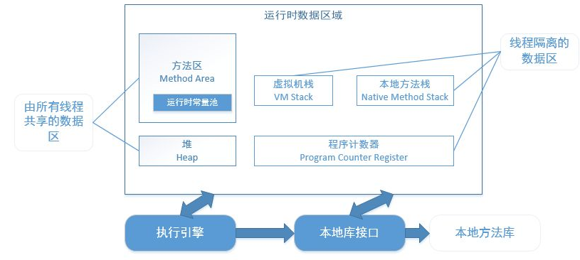

内存划分
java虚拟机按照运行时内存使用区域划分如图：

| 区域 | 是否线程共享 | 是否会内存溢出 |
|---|---|---|
| 程序计数器 | 否 | 不会 |
| java虚拟机栈 | 否 | 会 |
| 本地方法栈 | 否 | 会 |
| 堆 | 是 | 会 |
| 方法区 | 是 | 会 |
方法区
方法区主要用于存放已经被虚拟机加载的类信息，如常量，静态变量。 这块区域也被称为永久代。
运行时常量池 运行时常量池是方法区的一部分，其中存放了一些符号引用。当 new 一个对象时，会检查这个区域是否有这个符号的引用。
Java 堆
Java堆是整个虚拟机所管理的最大内存区域，所有的对象创建都是在这个区域进行内存分配。 这块区域也是垃圾回收器重点管理的区域，由于大多数垃圾回收器都采用分代回收算法，所有堆内存也分为 新生代、老年代，可以方便垃圾的准确回收。 这块内存属于线程共享区域。
程序计数器
记录当前线程所执行的字节码行号，用于获取下一条执行的字节码。 当多线程运行时，每个线程切换后需要知道上一次所运行的状态、位置。由此也可以看出程序计数器是每个线程私有的。
虚拟机栈
虚拟机栈由一个一个的栈帧组成，栈帧是在每一个方法调用时产生的。 每一个栈帧由局部变量区、操作数栈等组成。每创建一个栈帧压栈，当一个方法执行完毕之后则出栈。
• 如果出现方法递归调用出现死循环的话就会造成栈帧过多，最终会抛出 StackOverflowError。
• 若线程执行过程中栈帧大小超出虚拟机栈限制，则会抛出 StackOverFlowError。
• 若虚拟机栈允许动态扩展，但在尝试扩展时内存不足，或者在为一个新线程初始化新的虚拟机栈时申请不到足够的内存，则会抛出 OutOfMemoryError。 这块内存区域也是线程私有的。